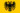

De: La Frikipedia, la enciclopedia extremadamente seria.
De: La Frikipedia, la enciclopedia extremadamente seria. De: La Frikipedia, la enciclopedia extremadamente seria.
| De la serie conflictos armados: | ||||
| Quinta Guerra Mundial | ||||
| ||||
| Lugar y fecha | Europa y Asia; 2079–2095 | |||
|---|---|---|---|---|
| Bandos | Comunistas y Ateos | Cristianos capitalistas | ||
| Fuerzas | |
| ||
| Comandantes | |
 El Moloco | ||
| Armas | arcos largos y picas muy largas junto con ametralladoras Gatling y kalishnikovs | Rifles Mauser 98 y Remingtons a repetición. Aviones Pucara y Typhoon.muchas picas | ||
| Bajas | incontables | incontables (pero más) | ||
| Resultado | Los Cristianos Mandan | |||
«Bien felipito te daremos la mitad de Europa pero acaba con los rusos, los sefardíes y protestantes»
~ El colegio de Cardenales del papa a un renovado Felipe VI que ya tiene más de 100 años
«Auf dier frekentashel spagnolen»
~ Alemanes peleando por España en Slavinsky
«He vuelto a la vida»
~ El mariscal Tito Zombie Jurando la destrucción de Kosovo y anxandola a los estados Yugoslavos de Krajina
«El que sobreviva aquí sera mi esposo»
~ La duquesa de Alba tratando de conseguir marido por enesima vez, lástima que no sobrevivió nadie al combate
«Maten a Felipe Camiroaga»
~ Boliviano al ver al zombie de Felipe Camiroaga con la vanguardía chilena entrando a Chuquisaca
«Porque nos dan armas de hace 50 años»
~ Un Soriano pensando coherentemente
«Cállaten Trashen Spagnolen»
~ Alemán respondiendo a lo anterior
La Quinta Guerra Mundial o conocida vulgarmente como el cantar de los Nibelungos tercios de Guadalquivir y Duero fue un conflicto bélico relacionado con el agotamiento de los recursos vitales y la imposición de nuevos ideales que ya están expandiéndose por Europa del este fueron estos los que le dieron las escusas a los americanos y a los Rojos para invadir y defender Europa. Pero igual aun me acuerdo que estábamos con mi amigo Jose a las orillas del Duero junto al IV regimiento de Arcabuceros de Soria esperando ordenes de batalla, luego de la guerra jamas lo volví a ver lo único que me dijeron fue que pereció en las áridas tierras del monte Slavinsky lo cual fue muy trágico.
Luego de 100 años el petroleo de acabo y los chinos dejaron de producir opio y juegos de ingenio, para abastecerse de las miseras raciones de oro negro, la OTAN invadió a Venezuela con el pretexto de que hay que compartir lo que se tiene uno con el otro sin nada a cambio pero los vino tinto no se quedaron atrás y con ayuda de los países no alineados y a los zurdos que habitaban Rusia, Bolivia y los miembros del ALBA junto con los, restos de la ETA y la FARC salieron a defenderlos pero los vagos de la EU intervinieron aunque eran lo mismo que la OTAN pero ahora tenían el apoyo de la Commonwealth británica y los montañeses de Asturias y los highlanders escoceses, que se veían venir desde la costa como un montón de Moros pero algo más se venia venir eran los países del MERCOSUR a los que el hambre y la peste mataba invadieron México teniendo un problema con la NAFTA. Los combates transcurrieron como una guerra de trincheras sin dejar un vencedor por ahora.
Unas 23000 embarcaciones de la OTAN partieron desde Aruba para desembarcar en Caracas al mando del general Pumpidou pero en las costas los esperaban las mejores fuerzas del mundo atrincherados en el monte inu yasha. A las 2:23 desembarco el quinto regimiento de asturianos y la novena de infantería sevillana a los que mataron como moscas pero desembarco el grueso de la infantería galesa junto a 70 daneses bien armados que destruyeron las baterías venezolanas, el orgullo y el opio le dio fuerza a los defensores que resistieron por más de seis horas algo que un ejercito venezolano nunca logro pero se había acabado el opio y los soldados volvieron a la realidad y se rindieron. Las 20 divisiones que estaban en el monte se rindieron al caer el primer cohete.
En tres días tomaron Maracaibo y usaron sus estadios de fútbol para corridas de toros.En siete horas llegaron los batallones andaluces que fueron acribillados apenas entraron en la ciudad pero los highlanders dieron guerra pero sus faldas no los protegían de las ametralladoras. Para avanzar solo tres cuadras se necesitaron dos divisiones de marines. Chavez II desesperado pidió ayuda a Evo.jr y a los países del ALBA respondieron al mandado con 50.000.000 de bolivianos en grito de guerra pero a medida que se acercaban al combate iban cayendo uno por uno.
Luego de varios problemas con la NAFTA,el MERCOSUR decidió invadir México y no les costo mucho solo tres escuadras brasileñas destruyeron yucatán, más tarde escuadrones argentinos desembarcaron pero los esperaban el general Morelos y Castillo con las mejores tropas traídas de Guadalupe y Texcoco, fueron derrotados al llegar refuerzos charruas. Con rapidez los yanquis intervinieron aliviando las cosas en el sur. La 23 división aerotransportada aterrizo con refuerzos paraguayos haciendo la batalla más dura, al drogar a los de Guada lajara y pactar con los zetas se abrieron paso hasta la capital se tuvieron que enfrentar con el smog y la milicia lo cual les costo un huevo y aun siguen sitiandola
Aún sitiando Oaxaca las tropas realistas vieron que La Chingada era un centro de maldad y borrachines, además de ser un refugio para los rebeldes aztecas y así partieron las unidades de reserva para incendiar La Chingada eso sí tuvieron que defenderse de los ladrillazos de adobe que les lanzaban a los invasores pero siguieron avanzando. Pero luego apareció un grupo de mariachis salió de la nada y se pusieron a cantar las mañanitas. Las tropas al verlos les apuntaron con sus armas y escopetas y les gritaron bajen esas mierdas que hacen ruido, los mariachis bajaron sus instrumentos pero al bajar las guitarras el músico la abrió y saco una ametralladora y empezó a dispararles a los realistas, los mariachis eran mercenarios de Obrador para defender sus grandes propiedades de las tropas extranjeras invasoras. En media hora empezaron los tiroteos entre los mariachis y los realistas.
La misión de los infantes argentinos era rescatar a private Castro que había sido capturado en las llanuras de Quetzaltinango por zapatistas. Los argentos se adentraron en la jungla y empezo una batalla campal que duro poco ya que los argentinos frieron a los zapatistas con napalm y los comandos pantera y jaguar rescataron a Castro donde casi lo castran.
Bolivia invadió Perú con ayuda de Ecuador y intentaron destruir el principal centro de aprovisionamiento de los yanquis en el sur: Chile. Y partieron desde Tacna el grueso del ejercito boliviano junto a sus aliados, mientras hacia su primera aparición histórica la armada de Bolivia que intento sitiar Valparaíso.
A las 5:23 sonaron las cañoneras bolivianas que interceptaron en el puerto. bombas y explosiones se escuchaban y un par de flaites darían su vida por ese puto puerto, sus queridos aliados de la OTAN solo le mandaron al exitoso general O´Donnel que había tenido éxito aniquilando beduinos marroquíes la flota ecuatoboliperuana hizo un muro de hierro y ningún barco pudo salir salvo un sector que se habían olvidado de cubrir, el general O´Donnel al ver esto mando a toda la fuerza chilena a destruir el muro y tomar los suministros pero una flota boliperuana, ya que los ecuatorianos se rindieron, al mando del general Grau no se rendía pero luego de seis horas de puro combate a sangre y fuego los flaites ganaron.
Gondor le había mandado refuerzos a los insurgentes peruanos para reconquistar Tarija perro una larga linea de trincheras les tomo un tiempo pero lograron avanzar hasta la tierra media y siguieron saqueando y matando a los chilenos que ahí habitaban.Llego la noche y se emborracharon con pisco peruano y al quedarse dormidos,una manga de insurgentes chilenos al mando de un pastor alemán los ataco por sorpresa matándolos a todos subestimando el ingenio chileno,mientras un contingente argentino tomaba Sucre y Santa Cruz.
Los soviéticos que ya habían conquistado a toda Europa oriental y Asia del sur decidieron aniquilar el bastión americano en Asia Japón, con el apoyo de china y su mano de obra barata construyeron el ejercito más grande de clones dispuestos a destruir la esencia yanqui en Asia en media hora Guam y Midway eran quemadas y destruidas sin sentido matando a los puertorriqueños que ahí vivían y siguieron así hasta llegar a Borneo donde los alemanes que traicionaron a la OTAN se les unieron listos para invadir.
Épicos guerreros suicidas voladores cuyo participación en la Quinta guerra mundial fue crucial para la resistencia japonesa. Organizando ataques contra los grandes cruceros Rusos y Eslovacos, ademas casi destrozan el muelle de Vladivostok entre otros ataques. Luego de la guerra este cuerpo de guerreros fue desmantelado, por temor a que se volviera a armar los rusos mataron a todos sus grandes pilotos acabando así con toda una cultura suicida kamikaze japonesa y que paso con los aviones se fundieron en hornos para hacer pan, ummm delicioso pan y utensilios de cocina para el desayuno.
Las divisiones japonesas deseaban recuperar Japón del Sur y poder mantener Tokyo el tiempo posible hasta la llegada de refuerzos, lo primero que hicieron fue mandar aibos suicidas para hostigar el avanze invasor luego se atrincheraron en el cerro Kagashima esperando alguna ventaja estratégica pero no fue así ni los samurais pudieron detener a los invasores lo cual fue un inútil gasto de recursos y tropas. Pero a los invasores no les basto quisieron saquear el templo de la diosa Atenea pero algo se los impidió eran unos 12 tipos con armaduras de oro. Los extranjeros sedientos de riquezas querían matarlos y quedarse con sus bellas armaduras de oro macizo pero los sujetos hicieron algo relacionado con el séptimo sentido y los mataron a todos, los invasores no volvieron acercarse a esos afeminados pero fuertes guerreros.
Los aliados desembarcaron pero hubo sorpresa se les unieron los boivianos que ansiaban un triunfo de su ejercito, los ejércitos sumarais al servicio del Daymio le causaron muchos problemas y los cyborgs de Honda más pero pelearon los bolitas hasta la muerte alcanzando la calle Fujikawa frente al estadio de los pajaritos, les faltaba cinco cuadras y llegaban al consulado. Al ver el gran muro de hierro construido por los japoneses para defender la capital y así empezó el asalto pero las tropas aliadas no podían pasar y los contingentes al mando del general Kenshin defenderían con su vida su país antes que caer en manos comunistas y menos en bolivianas. Los aliados desviaron un tren bala para que destruyera el muro y al caer empezó la batalla. Doraemon y 23 divisiones japonesas vencieron a los chinos y a los peruanos pero no vasto eran demasiados y se rindieron. Estados Unidos miraba impotente como destruían a sus aliados.
Los Nipones al ver que se les venía la noche por el avance rojo con ayuda de los realistas al mando del emperador. El shogun no tuvo más remedio que hacerse un harakiri con unos 100 colaboradores porque es mejor morir que ver a un montón de comunistas gobernando un país asiático. El emperador chocho tomo el poder apenas se fueron los rusos el hizo una dictadura siguiendo los ejemplos de Fidel y Lenin entre otros marxistas resentidos. Gracias a esto cambiaron su bandera e un puntito azul a uno grande rojo sangre marmota.
La OTAN reaccionó al ver que perdía el pacifico y decidió darle a Rusia donde más, le duele destruyendo los suministros de vodka y ron, pero contraatacaron destruyendo los bares donde servían brandy y kalimotxo haciendo que Escocia y los países celtas se retiraran de la guerra.
Al ver la URSS que el único país que no aceptaba sus políticas era Hungría y lo invadió haciendo que unos 2300 húngaros se fueran, y al ver que Checoslovaquia y Polonia estaban tan cerca recurrió al mismo procedimiento. La OTAN miraba como se les iba todo a la mierda y decidieron mandar junto con la EU para darles masa dando inicio al frente oriental. Poniendo en claro quienes eran los rojos y quienes los azules.
Los tanos facistas cansados de la falta de subsidios por parte de Unión Europea decidió darles una lección invadiendo el norte de España, centro de poder de la EU y así fue como 20,000 infantes de marina italianos partieron listos para invadir los Pirineos pero los vascos no se quedaron papando moscas y decidieron darles pala en rueda. El jueves 15 de Abril del año Augusto los italianos desembarcaron por ahí al norte de Hispania. La resistencia ya estaba hecha, los tercios españoles del regimiento de Asturias ensartaron sus largas picas y lanzas sobre unos orgullosos piamonteses, los sardos perecieron al ver a los tercios y batallón tras batallón caían en los campos asturianos sin sobrepasar la barrera de picas creadas por los tercios españoles y así fue como los sueños italianos de tener más subsidios decayeron entre las largas picas españolas.
El ejército español formado principalmente por sorianos que eran los más cobardes valientes de su estirpe fueron mandados junto a los sevillanos a Flandes y detener una revuelta neo nazi que podía cambiar los rumbos de la guerra, ya que no se podían permitir otra perdida ante los infieles que estaban refugiados en Breda y parecían que no daban paz pero los españoles al mando de Diego Alatriste y los sorianos al mando del intrépido Moloco que comandaba su primer sitio. Luego de sabotear el suministro de agua y matar a un montón de neonazis georgianos, Breda se rendía dándole paz momentánea a España y sus colonias del comunismo. Pero la guerra no acababa para los soriano y el Moloco que fueron mandados a Rocroi para detener una insurgencia protojudia comunista en el Franco Condado a los cuales reventaron en un santiamén pero aun así las valientes tropas del rey fueron mandadas a su Última misión defender Luxemburgo del avance rojo.
Los soviéticos al ver que el centro financiero de Europa era Luxemburgo decidieron invadirlo y darle un buen puñetazo a la OTAN pero los europeos no se quedaron papando moscas y se dispusieron a defenderla a toda costa mandando a los tercios sorianos que opusieron una resistiendo formidable matando un millón de rusos en una hora. Pero los rojos no se rendían no podían dejar pasar tal chance de arruinar a los bancos más poderosos del mundo, aunque al principio les fue bien los tercios reaccionaron y los echaron rotundamente a pesar de que los superaran 10 a 1 y así fue como las sucursales del BBVA y el Banco Santander se salvaron de caer en la ruina.
Los Comunistas fervientes ateos deseaban aniquilar a la iglesia para acabar así con su poder terrenal y espiritual pero no contaban que el Vaticano estaba protegido por un campo de fuerza creado por Jesús con ayuda de su padre, para destruirlo había que destruir siete pilares que simbolizaban los siete partes del cielo y un pilar maestre que estaba en el centro de la plaza San Pedro, Solo tenían doce horas o el campo sería permanente y los sueños comunistas de un universo ateo se verían desquebrajados. Los camaradas soviéticos habían llegado al primer pilar que era la cuna de los Arcángeles, guerreros de cristo liderados por San Miguel Arcángel. La lucha fue tremenda pero los hombres de dios hicieron sonar las trompetas del día del juicio haciendo sentir miedo a las tropas del infierno comunistas quebrando sus tímpanos pero justo apareció Astaroth el líder de legiones que derroto a los arcángeles pero perdió un brazo y dos piernas. Los rojos demonios destruyeron el primer pilar, los santos no cometerían otro error. Al llegar al segundo pilar el Arcángel Haniel y San Pedro los estaban esperando con toda la guardia de querubines y Príncipes de dios, Astaroth fue el primero en caer y Baal le siguió también. Aunque los santos y la fuerza espiritual de San Pedro eran formidables no alcanzó. Lucifer el portador de luz guiaba al ejército rojo hacía el tercer pilar ahí estaba Uriel, el arcángel introvertido con los serafines bien listos para la matanza. Mucha sangre corrió pero igual el ejército rojo era demasiado grande, igual suerte corrieron los pilares custodiados por Zerachiel, el extrovertido, Gabriel el mensajero y Rafael el cantante.
En el último y gran pilar los esperaba a todo ese gran ejército de satán, los siete grandes Arcángeles que habían huido, los ángeles, los serafines, los príncipes caídos como Napoleón o Felipe II de España los santo evangelizadores, la madre Teresa de Calcuta y su santidad el papa Mateo II con toda la Guardia Suiza y ordenes militares como los templarios listo para degollar demonios perdón comunistas y eliminarlos de la faz de la tierra. La batalla fue intensa, la madre Teresa dio varios golpes a los cabecillas y San Gabriel derrotó a Lucifer, quién dijo que volvería con forma de administrador de una Wikia y David uso su honda para darle en la cabeza a muchos demonios, Abundio el mártir decidió vengarse de los comunistas árabes cortandoles el cuello, Ildefonso no fue tan piadoso con los santos a los que les clavo sus afiladas plumas y les pego en la cabeza con sus biblias.
Luego de tal combate espectacular parecido a un libreto d Stanley Cubrick o Spielberg pero con efectos especiales la iglesia madre, patrona de los pobres ricos fue salvada de las garras del malévolo comunismo, el papa hizo una ultima cena de celebración.
Al ver que los rusos avanzaban muy rápido, rapidísimo, los europeos dejaron sus esperanzas a la tropas alemanas que todavía le eran fieles que tenían una forma de combatir que experimentaron en las guerras anteriores, era el demoledor Bliztkrieg, que fue aniquilando a las tropas soviéticas una por una. Los rojos vieron como tanques Tiger III y Panzers con el apoyo de infantería avazaban sobre las trincheras. El Bliztkrieg debía resistir y destruir el aparato soviético hasta que el Moloco y los tercios llegaran desde Breda, aunque no parecía que eran débiles, los alemanes al mando del Kaiser Beckenbauer y el bombardero de la nación Gerd Muller. Pero los rusos tenían a un comandante muy famoso, era Georgi Zhukov, que había peleado en las guerras anteriores, donde había tenido mucho éxito contra los alemanes, él fue el que descubrió el punto débil del ataque alemán, el coso es que los alemanes ponían a la fuerza aérea y la infantería en el centro y los blindados al costado para derrotarlo. Zhukov colocó minas en perros pekineses e hizo que se pusieran debajo de los tanques para destruirlos, lo cual resultó muy efectivo, en ese momento mandó al grueso del ejército ruso para destruir a la infantería germana y la invencibilidad de la Bliztkrieg. Justo cuando estaban aniquilando a los Tedescos aparecieron los tercios imperiales para rescatarlos, lo que resulto suficiente para arruinarle el vodka a Zhukov.
Luego de pensarlo mucho el mariscal Tito, líder de las fuerzas soviéticas yugoslavas decidió atacar las trincheras del frente de la OTAN con 3,000,000 de serbios partisanos listos para la invasión y así fue a las 5:45 de la mañana atacaron a las fuerzas vascas-andaluzas de la OTAN que se rindieron al tiro de cañón pero las tropas austrohungaras atacaron para darles fuerza a los suecos que estaban siendo superados 20 a 1 en las estadísticas al ver esto los europeos mandaron al grueso del ejército inglés que peleo pero cayo con rapidez, al ver esto el General Patton mando a las tropas europeas restantes que se refugiaran en el monte slavinsky y esperar a los rojos en una oposición ventajosa.
Al ver desde la cima del monte a todos esos comunistas bajar de la colina el terror se apodero de sus almas, debían pelear o morir. A las 6:00 los rusos empezaron a bombardearlos pero los europeos, los sevillanos y asturianos tenían ganas de retirarse pero los europeos mandaron a Stauffhemberg para que los animara pero no sirvió la derrota era inminente. El saldo de la batalla fue 2,000,000 de rojos muertos y 700,000 europeos dieron sus vidas dando la victoria a los aliados comunistas. La UE no tuvo más opción que pedir la paz antes que destruyeran sus ciudades y se robaran sus obras de arte para ponerlas en el Hermitage. Los estados Unidos al ver tal catástrofe decidió dejar de invadir Venezuela y encargarse de su propia defensa, así es como acaba la 4ta guerra mundial y empieza una nueva era de comunismo mundial que sería derribado por el restaurado imperio español MWAHAHAHAHAHA.
Al ver que el rey de España iba a heredar tantos títulos que nadie los podía contar gracias al sacrificio del gran carlos de España, no el enfermo loco sino el macho depravado amigo de Tiziano y a astutos generales como el Moloco, Alatriste y el Gran Capitán (Anónimo por supuesto) se alcanzaría la hegemonía mundial ya que las potencias estaban débiles y necesitaban prestamos del BBVA y del Banco Santander, además los países empezaron a asegurarse con Mapfre gracias a sus tasas accesibles descomunales de intereses para la gente. Haciendo al imperio español prospero, grande y asegurado.
Estados Unidos compraría Venezuela por 150,000,000 de dólares a Chavez y la Austría, Yugoslavia junto a Polonia, los Países bajos, Luxemburgo y toda la península itálica se fusionarían formando el Sacro Imperio Romano. Felipe VI de Borbón como soberano principal. Soria sería una comunidad autónoma, la URSS conquistaría Mongolia para expandir su ideología, el papa hizo un pacto con la familia sacro imperial Borbona por el cual el papa siempre sería descendiente de tal familia con la fusión de los estados pontificios al imperio Europeo Sacro, además se eliminaría el celibato y todos fueron muy felices y comieron perdices.
Luego de la guerra los grandes generales y el rey Alfonso XIX, hijo bastardo del gran Juan Carlos I y una judía, quién estaba preparando al último sobreviviente para administrar tales dominios, por eso le dijo a su gran amigo y compañero de armas en la causa de Marruecos que se encargara de su tutela ya que su hijo Juan IV estaba indispuesto por la hemofilia. Se reunieron para hablar quien cedía los territorios, primero con amabilidad o sino por la fuerza, todos aceptaron y nombraron a Roma como capital Administrativa y a Madrid como capital legislativa y hogar de los reyes del Gran Imperio Santo. Felipe VI mato a su hermanastro Alfonso y se mando una Jihad en los ghettos judíos de Andalucía, su primo Pablito Aranjuez Sfraunstadfel de Borbón y Menorca sería papa como Benedicto XVII pero los borbones se quedaron sin descendencia producto del VIH que tenía Felipe y se los mandó a sus parientes los cuales murieron y sus primos desterrados de Grecia meterían mano, pero el siguiente papa que era hijo del primo del primo del duque de Soria mandaría a los Lasquenetes a aniquilarlos quedándose con tremendo imperio.
| |
|---|
|
|
Autor(es):